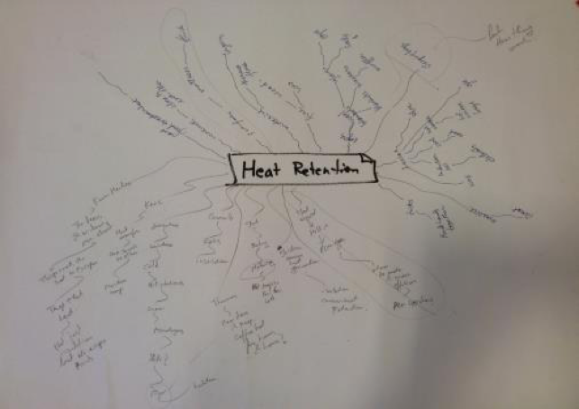
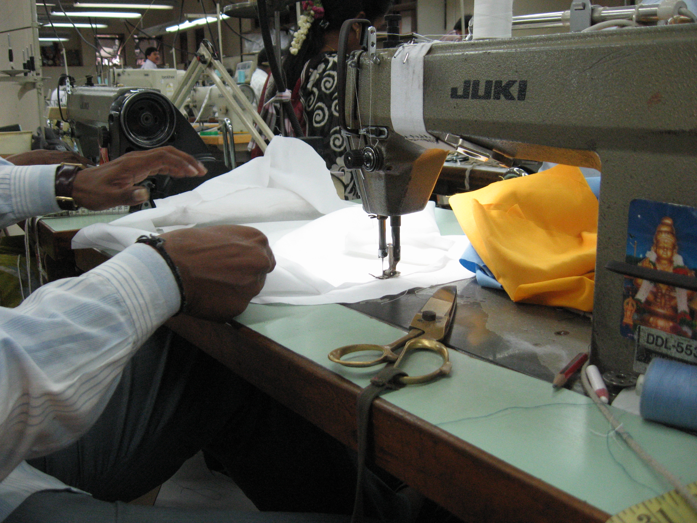

Embrace Innovations is a Stanford-based social enterprise that develops disruptive healthcare technologies focused on reducing infant and maternal deaths in emerging markets. Care, an at-home infant warmer, helps low birth weight babies in the first 3 months of their life by providing them warmth. This product functions without electricity and is used in several rural places in India. My project was to redesign it so that it could meet the performance requirements.
Outcome: Identified the technical causes of heat loss from the product and also uncovered human error which led to the product not performing the way it was meant to.
I identified that human error was the important reason for the product not meeting its requirements. I then redesigned the product by primarily drawing inspiration from how mothers wrap their babies. After quick prototyping, I followed this up with co-creation by talking to mothers and nurses.
Meanwhile, I also collaborated with the regulatory authorities and manufacturing team to understand the ISO standards that the product needs to adhere to.
I made several prototypes and performed technical tests as well as user tests. I also sourced material from China to make more finer prototypes. I wrote test plans to enable the QA team to perform independent testing. As I followed an iterative process, I made changes to the design based on user and expert feedback from co-creation sessions. This included the doctors at the hospitals, neonatal nurses, manufacturing and assembly teams, quality maintenance personnel, marketing and the executive team.
Once the final design was ready, I initiated the Engineering Change Request (ECR) . An independent team conducted the final tests and the Engineering Change Order (ECO) was passed. The design adhered to the technical as well as regulatory standards.
Conceptualised and prototyped an interactive dashboard for Do CHANGE, an EU funded project
For an ongoing project with Marktplaats, we performed contextual task analysis for a "Buyer".
Designed onboarding using principles of persuasion for Eventix.io